Passerelles numeriques Cambodia(PNC)
Launched in 2005 in Phnom Penh,Passerelles Numériques Cambodia (PNC); previously known as CIST, offers a 2 year IT training program based on a holistic educative approach including technical and soft skills, and a personal development program.
Context
Passerelles Numériquesis a French non-profit organization,create in 2005, which intends to enable the most under privileged young people access to higher the promising sectorof information Technology.
Financial difficulties continue to be a barrier for high school graduates to pursue their higher education in Cambodia.
60% of the working poor population survives with less than $3 USD a day.In consequence, many young Cambodians must drop their studies, move to neighboringcountries, and end up working in very difficult conditions to send some money home.
77% of the population lives in rural areas and 49% is under 25. Most secondary education is provided on a fee-paying basis, and is therefore inaccessible to most students, especially in rural areas.
Key Date
- 2020: PNC is supported by the Skills Development Fund (linked to the Cambodian Ministry of Economy and Finance & the Asian Development Bank).
- 2016: PNC launches the ‘Openh’ Project, a vast program to update the curriculum of the 2-year training.
- 2015: Passerelles numériques Cambodia celebrates its 10 year anniversary.
- 2014: PN Cambodia’s 1st Career Forum.
- 2011: for the 1st time, a total of 100 students joined our 2-year program.
- 2009: Launch of a second major: WEP (Web Programming).
- 2007: Inauguration of PNC building and first graduation ceremony of 20 students (SNA major).
- 2005: Launch of Passerelles numériques’ first program in Phnom Penh, with 25 students. One major in SNA (System & Network Administration).
Our Activities
Main partners supporting PN Cambodia
Passerelles numériques Cambodia has built through the years a large network of partners who contribute to our success. A large number of companies have subscribed to our innovative model of shared skills sponsorship. Support can be provided through financial or material donations, training, selection, etc.
 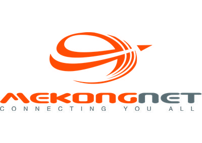
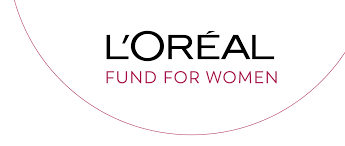
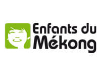
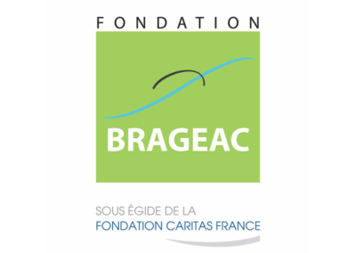
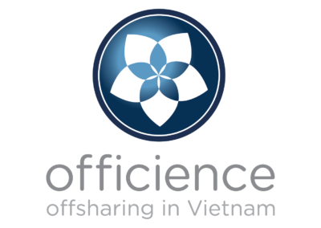
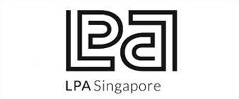
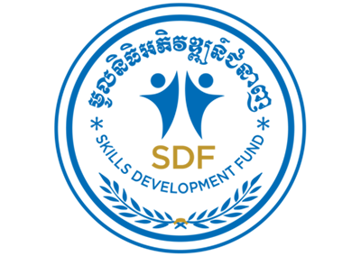
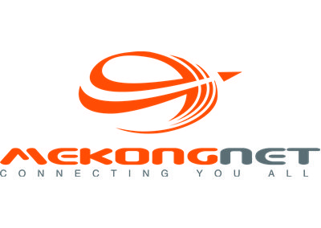
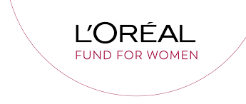
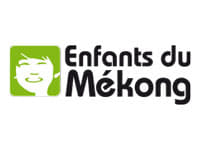
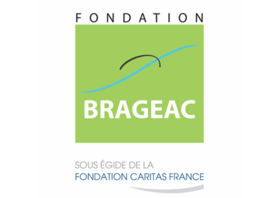
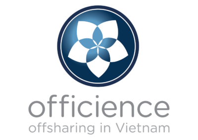
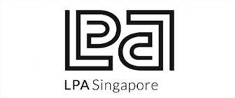
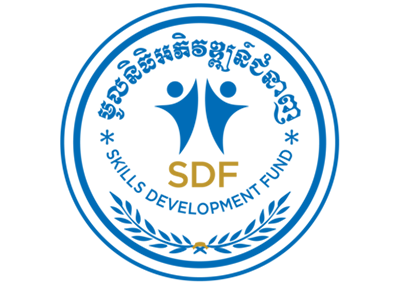